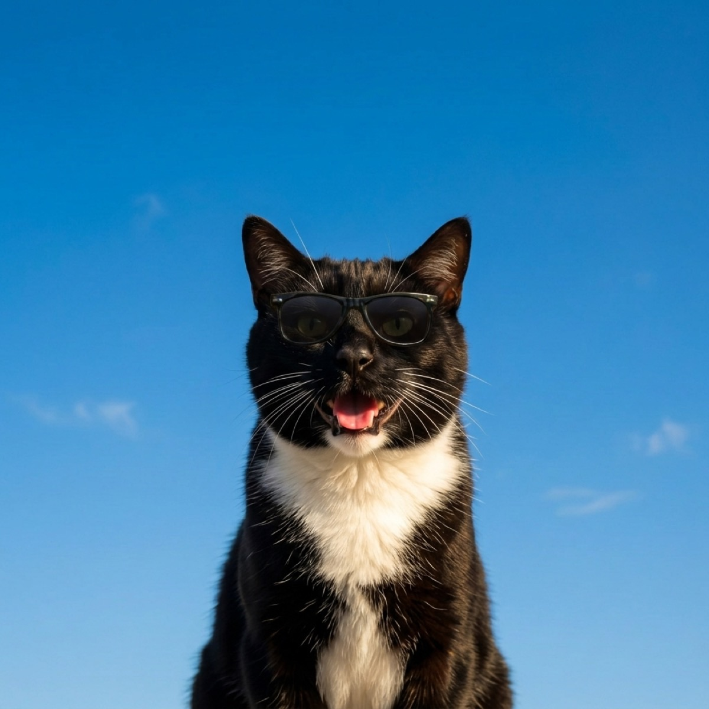

Do Cats Get Heatstroke? Hot-Weather Safety for Cats
Yes, cats absolutely get heatstroke. We just hear less about it because cats are quiet sufferers: they hide, they go still, and they rarely make a fuss until they are in real trouble. That talent for masking discomfort is exactly what makes summer heat sneaky for cats. Here is how to stay ahead of it.
Why cats handle heat differently than we do
Cats descend from desert-dwelling ancestors, so they tolerate warmth better than you might expect and often seek out a sunny windowsill on purpose. But that desert heritage has limits, and a modern house cat in a hot, airless room can absolutely overheat. Cats cool themselves by grooming (the saliva evaporates), by seeking shade and cool surfaces, and only as a last resort by panting. A panting cat is not normal the way a panting dog is, it is a sign the cat is working hard to cool down, and it deserves your attention.
Some cats are at higher risk: flat-faced breeds like Persians and Himalayans (shortened airways make cooling harder), long-haired cats, kittens and seniors, overweight cats, and any cat with heart or breathing problems. The ASPCA's hot weather safety tips are a good general primer that applies to cats as much as dogs.

The warning signs of an overheating cat
Because cats hide distress, you have to know what to look for. Signs of heat stress and heatstroke in cats include:
- Panting or open-mouth breathing. Rare and abnormal in cats. Treat it as a warning, not a quirk.
- Lethargy and weakness. A cat that is unusually flat, unsteady, or unwilling to move.
- Drooling and restlessness, sometimes followed by a worrying stillness.
- Bright red or pale gums and a rapid heartbeat.
- Vomiting, stumbling, or collapse. These are emergency signs.
If you suspect heatstroke, move your cat somewhere cool, offer water, dampen the fur with cool (not ice-cold) water, and call your vet immediately. Cornell's veterinary experts explain how quickly a cat's body temperature can climb into the danger zone in their overview of feline heat safety. Heatstroke is a true emergency: do not wait to see if it passes.
Simple ways to keep your cat cool
Most feline heat safety is about the environment, since indoor cats live in whatever conditions your home creates:
- Always-available fresh water. Cats are famously light drinkers, so make water easy and appealing. Many cats drink far more from a circulating fountain than a still bowl, which is a real win in summer.
- Cool retreats. Leave a few shaded, breezy spots open: a tile floor, a bathroom, a spot near a fan. Cats will move to the coolest place they can find if you let them.
- Airflow and shade. Crack blinds on the sun-facing side during peak heat, and keep air moving. If your home gets dangerously warm, a single air-conditioned room makes a safe haven.
- Never trap a cat in a hot space. Sunrooms, garages, parked cars, and closed-up conservatories heat up fast and turn deadly. Make sure your cat cannot get shut into one.
- Groom, do not shave. Regular brushing removes loose undercoat and helps a long-haired cat stay cooler, but a cat's coat also helps regulate temperature, so shaving is rarely the answer. Ask your vet first.
Let the forecast be your early warning
The trick with cats is that you cannot rely on them to tell you it is too hot, so the heads-up has to come from you. Knowing a hot, humid afternoon is coming lets you set up water, open a cool room, and get the airflow going before the house bakes, rather than scrambling once your cat is already uncomfortable. With WeatherPets, your own cat delivers the day's high and a Live Activity that tracks conditions in real time, which makes "is it going to be a hot one?" a glance instead of a guess. For a pet who will never complain until it is serious, that early warning is worth a lot.
Gear that helps: cats drink more from moving water, so a stainless steel pet fountain is an easy hydration upgrade in summer. See our full picks in the best pet water fountains.
WeatherPets is an Amazon Associate and may earn from qualifying purchases, at no extra cost to you.